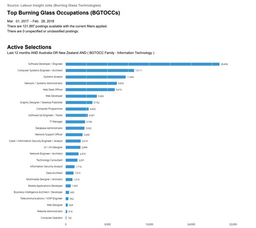

What does it do?
Cybersecurity is the utilisation of technology to protect and reduce the risk of unauthorised entry and exploitation of computer systems, programs, devices, networks, and data (IT Governance Ltd 2021). Cybersecurity is a rapidly growing field; in response to an increase in data breaches with 1,291 breaches in 2021, compared to 1,108 in 2020 (Morris 2021). IT professionals are constantly seeking new ways to deal with cyber-attacks, leading to the development and incorporation of state-of-the-art technologies, policies, and procedures. When referring to state-of the-art, people think of new and exciting technologies. However, in the case of cybersecurity, it also encompasses an overview of the best policies and procedures on security measures. VPNHaus (2019) claims that state-of-the-art in this field refers to the best performance of a subject available on the market to achieve an object. Therefore, the state-of-the-art of cybersecurity refers to the Cyber Security Guidelines within the Information Security Manual (ISM) which instructs organisations on how to best protect their data from cyber threats (Australian Cyber Security Centre 2021). These guidelines are comprehensive, including personnel security, physical security, governance, and Information and Communications technology security matters. Alongside these guidelines, machine learning technology, and cybersecurity simulation are also considered part of the state-of-the-art of cybersecurity.
Machine Learning is a sub-field of AI, Gottsegen (2019) states that machine learning utilises previous datasets and statistical analysis to create algorithms that can make assumptions related to a computer systems behaviour. This data is used to change its actions and can even perform functions it has not been programmed to. Machine learning is increasingly being used in cybersecurity due to its ability to identify potential hazardous files and sort through millions of files in a short period of time to uncover threats and automatically deal with them (Gottsegen 2019). Machine learning uses more statistical techniques as opposed to mathematical ones to find unhidden trends, incorporating the AI tool, this data can then be used to predict future patterns and the cyber threat landscape to prevent threats (Das 2021). With the development of AI and task automation through machine learning, the cybersecurity field has greatly benefited regarding automatic Penetration Testing and Threat Hunting, which frees up IT professionals to focus on more important tasks. Alongside machine learning is cybersecurity simulations, this refers to creating simulated environments in important areas such as representative environment building, tests, evaluations and explorations, risk analysis and assessments, and exploring humans to predict threats and learn the best way to deal with them (Kavak et al. 2021).
Cybersecurity simulations are advancing rapidly, in the next few years Kavak et al (2021) predicts that there will be processes to establish data collection and access which will inform new models, utilising existing social theories to create new theoretical constructs specific to the field of cybersecurity. This will allow the use of psychology behavioural models to be used in cybersecurity as the means to develop sociotechnical solutions. Kavak et al. (2021) argues that these simulations should play a bigger role in the field as securing cyberspace requires not only great technical ability, but also behavioural insights. For the development of these new focused simulations to be viable, behavioural complexities need to be included in cyberattack simulations rather than just focusing on the cognitive approach that is currently used (Kavak et al. 2021). Incorporating psychologists as part of the multi-disciplinary team to study behavioural patterns during cyberattack simulations is a crucial part of this development happening. Utilising the previous mentioned simulations combined with machine learning and updated cybersecurity guidelines, the prevalence of large data breaches and other cyberattacks will be reduced and cause less overall damage.
What is the likely impact?
With the development of new theoretical constructs that use behavioural models in relation to cybersecurity simulations, existing cyber space defence mechanisms will be greatly improved. As stated by Mejia-Ricart (2019), this approach will aid in the early detection and prevention of cyber-attacks and assist in identifying potential adversaries and repeat offenders with similar modes of operating. The potential impact of this development will be a lowered prevalence of cyberattacks due to being more aware of potential offenders, allowing cybersecurity personnel to catch them before any real damage is wrought. Mejia-Ricart (2019) believe these behavioural studies will also allow for collaborative internet-wide security infrastructures through sharing of organisational security intel and improved system security automation, further improving cyber space defence mechanisms. This approach is similar in nature to criminal investigative analysis, otherwise known as “Profiling”, currently used by law enforcement to develop a description of an unknown offender (Bonn 2017). The methods used have seen great results in predicting future offenders, which is the premise for using it for cybersecurity. This will help keep people who are vulnerable to scams and those who struggle with using technology to keep their information and details safe. Utilising these behavioural models to update the algorithms of automated threat detection systems will be ground-breaking in the field. With machine learning being used to detect key behavioural patterns, IT professionals in the field will have more time for other important tasks. The combination of machine learning and focused simulations utilising behavioural models will reduce some cybersecurity jobs due to the automation of threat detection. However, IT staff will still need to check the validity of the profiles once they have been generated and decide on a course of action, so I believe some job roles will change but not many will be made redundant.
How will this affect you?
The previous mentioned developments will improve cyber space safety and allow everyone to feel more secure when using computer systems. In my daily life, I will feel more confident knowing my personal details are protected and I can share photos and details with my family and friends overseas, via social media or email, without the worry that my details or photos will be stolen and used for nefarious purposes. Since technology is increasingly integrated into our daily lives and we are becoming more dependent on it, we are also more vulnerable and at risk of data breaches. The social impact of cyber-attacks may not be as apparent as the financial impact but can still cause lasting psychological damage. With these advancements in cyber security, I will feel more comfortable using the internet without concerns for my privacy or physical safety being threatened. After Sony’s last data breach, I stopped entering my credit card details online for worry that my hard-earned money could be stolen. Labrecque et al. (2021) found evidence that consumer decisions following a data breach are adversely affected and perceptions of affected organisations are changed after social contract violations, increasing stress and anxiety levels. I look forward to knowing cyber space is safe enough again so I can order games online with confidence that my details are secure and won’t be stolen. I believe that these developments in cybersecurity will not only affect me positively, but also my family and friends. It will mean my daughter can use the internet to contact her family overseas to build and maintain her own relationships with family without relying on me to do it for her, as I won’t need to worry about censoring the information she is sharing for fear that it can be breached and used against her.
What does it do?
Machine learning is a component of the larger field of artificial intelligence pertaining to furthering our understanding of computation theories and the human learning process with the idea of imparting such abilities on a machine through programming (Mitchell & Jordan 2015). Further, machine learning is a tool used in data analysis which automates analytical model building. The goals of machine learning models are to analyse data, identify patterns within the dataset and using this knowledge make predictions and inferences regarding future data. A machine learning algorithm can; correct its own errors, improve from past mistakes, and learn to perform new tasks based on old tasks (Chen 2020). Machine learning provides humans with a tool to analyse datasets that are far beyond the scope of human capability and to come up with predictions and inferences that can be acted upon. The assistance of machine learning would be sought if; very high accuracy was not vital, the dataset is very large and unanalysed, the question being asked is novel with very little historical data, or the problem is dynamic and in a constant state of change (Award & Khanna 2015).
There are two common types of machine learning: supervised and unsupervised. Supervised machine learning systems use training data to generate predictions. Training data is a set of data with known relationships generally in the form of an input x and an output y, though the inputs and outputs can vary greatly in their nature, for example inputs can be entire documents, images, DNA sequences, or graphs (Mitchell & Jordan 2015). Outputs may be binary or regressive in nature, for example, identifying spam emails(binary), or predicting house prices using a regressive model (regressive) (Imran et al. 2021). Unsupervised learning does not require a training data set and instead looks at relationships between points of data within a set. Some areas that unsupervised machine learning is used are recommendation engines, anomaly detection within datasets, natural language processing, image processing and computer vision (IBM Cloud Education 2020).
The forefront of machine learning applications are AI neural networks. An AI neural network is a series of interconnected artificial neurons and synapses that act together to process information in a method analogous to a human brain. AI neural networks are layered with the first layer being the input layer, a middle layer that contains most of the nodes and synapses which attenuate the data based on trained coefficients, and finally an output layer which distributes the information to a point outside the network (March 2021). Ai neural networks are used in many disciplines for classification, clustering, pattern recognition and prediction (Abiodun et al. 2018).
The ability of machine learning is directly tied to the computing strength of processing units. Quantum computing will greatly increase the ability of machine learning algorithms to process large amounts of data. An experiment conducted in 2019 pitted a state-of-the-art supercomputer against a quantum computer, the results showed that a task which would take a supercomputer 10,000 years to accomplish was achieved by a quantum computer in 200 seconds (Arute et al. 2019). This is an obviously giant leap in computational power that is likely to become mainstream technology within a decade, and a very powerful combination when coupled with advanced machine learning algorithms.
What is the likely impact?
AI neural networks are currently commonly used in e-commerce for recommendation engines that are tailored to the user based on what the neural network has learned about their habits, and in search engines. More recently, AI neural networks are being used in the health care industry to assist in diagnostic imaging, clinical decision making, and many other areas clinical and enterprise related (IBM 2021). In the specific case of IBM Watson, an AI neural network, it was trained for two years on millions of pages of medical data to the point where the network can now prompt diagnosis and propose treatments based on patient complaints and anamnesis (Mach 2021). Other areas that AI neural networks are used include information security, big data, cloud computing, agriculture, science, medical science, education, finance, management, security, engineering, trading commodity, art, and forensic science (Abiodun et al. 2018).
The process of developing machine learning algorithms that are tailored for specific purposes is being automated. This means that people or business who are not trained in coding or machine learning can benefit from what complex machine learning algorithms have to offer (AutoML.org 2021). This process of automating machine learning has already begun with Keras offering a user-friendly python interface to the TensorFlow library. TensorFlow is a free and open-source software library for machine learning and artificial intelligence. Machine learning is predicted to have a specifically large impact on the healthcare and pharmaceutical industries by improving prediction and prevention of possible diseases, rather than focusing on treatments after diagnoses. Currently disease predictions are based on limited variables such as age, weight, gender, etc. With machine learning, however, the data set can be greatly widened to include things like, patient demographic and health records. By using machine learning techniques such as natural language processing and image processing, electronic health record data can be fed into a machine learning algorithm where patterns can be established which will lead to better prediction results (Jones et al. 2018). Further, machine learning will assist in drug development by using datasets of drug compounds and chemical structures to predict the impact they may have on different biological functions causing side effects. Machine learning will result in shorter drug testing times (Zhydik 2021).
As machine learning becomes more ubiquitous in society more and more jobs will not require a human presence. The benefit will be that productivity and effectiveness will increase to levels that humans can’t achieve. Some jobs that are likely to be replaced by machine learning are bookkeeping and data entry, receptionist, customer service, manufacturing and pharmaceutical work, doctors, market research analyst, and retail services. All members of society will benefit from a medical system augmented by machine learning, as diagnosis will be quicker, preventative measures will be stronger and faster, and care will be more tailored to specific needs.
How will this affect you?
Machine learning will greatly affect me personally in the years to come. From my google searches being more efficient, to my overall online experience being more personalised, my car being automated, my medical services being more effective, machine learning will affect almost every aspect of my life. Previously my doctor would have to sift through towers of medical data to make a diagnosis, but with the aid of machine diagnosis can be done accurately and swiftly by an algorithm in a matter of minutes or seconds freeing up doctors to put more time and effort into treatment decisions and actions. Note that treatment decisions and actions will come under machine learning too although other fields will need substantial advancements alongside machine learning for example robotics. Machine learning image recognition and classification technology will affect me by providing a smart and adaptive automated logistical supply chain. As we have seen recently with the various Covid outbreaks, supply chains can quite easily be disrupted by disasters. Machine learning would add a layer of flexibility and adaptivity to a supply chain by analysing vast amounts of data, predicting disruptions effectively and taking pre-emptive actions, this would result in adequately stocked supermarkets in times of crisis. As the information technology progresses the amount of data being acquired is going to grow meaning we are going to steadily rely more on machine learning. It is already a major part of many aspects of our lives and is only going to get more important.
What does it do?
Autonomous vehicles are better known as self-driving cars. They are vehicles which replace all or some of the human driving factor with electrical and mechanical devices (Faisal et al. 2019). Autonomous vehicles depend on multiple software, AI and different disciplinarians such as computer science, electrical engineering, and mechanical engineering to be designed and built (Singh & Saini 2021). Caldwell & Hendrickson (2020) state that every autonomous vehicle should be fitted with sensors, cameras and lidar to detect obstructions on the road and built-in navigation systems to remember lane geometry and road signs. Sensors and cameras not only detect obstructions, but they should also have the ability to build a picture to distinguish pedestrians, cyclists, other moving and stationary vehicles for a safer travel experience (Piper 2020). To combat changes in weather, temperature or any external changes, environmental sensors should be fitted to identify temperature and precipitation to adjust its systems accordingly to the driving conditions in real-time (Caldwell & Hendrickson 2020).
With multiple technological issues and research still going underway with building safe autonomous vehicles, it’s unclear when self-driving cars will be available to consumers and emerge as a norm. Although self-driving vehicles are not currently available for purchase in consumer markets, recent Tesla car models are all geared with self-driving capabilities. Tesla uses the Autopilot feature which uses cameras to detect objects, steer the car, brake automatically, and keep the car within road lanes, but constant engagement with the car is required to avoid fatal accidents (Metz & Boudette 2021).
There are currently on-going trials and experiments with autonomous vehicles, such as driverless shuttles for airports and campuses, ride-hailing services as well as delivery robots in different areas (Caldwell & Hendrickson 2020). UK based company Oxbotica has been trialling driverless taxis in the UK and Europe while China based company AutoX has already launched its driverless taxis in Shanghai, China and are expected to expand these services to other cities in the next couple of years (Cusack 2021).
Many companies promise autonomous vehicles will be available in the near future for the consumer market. However, there is more involved in autonomous vehicles than mechanical, engineering, and technological advancements. Raue et al. (2019) indicates, there are overall safety concerns and reliability issues with technology including unexpected occurrences such as hacking, personal data tracking and equipment failure. Questions involved in the decision-making processes of autonomous vehicles also continue to be researched and further studied. Metz & Boudette (2021) claim that autonomous vehicles should be subjected to further real-life data and training in its reactions and decision-making procedures to real-life obstacles and sudden occurrences before they should be available to the consumer market. Therefore, although currently there are vehicles with autonomous features available, it is unlikely that complete autonomous vehicles will be accessible in private homes in the near future.
What is the likely impact?
Autonomous vehicles are expected to have substantial impacts to road safety, time and efficiency, cost of travel, and in the manner of travel. Faisal et al. (2019) conveys autonomous vehicles will “facilitate dynamic ridesharing” which will “guarantee high traffic capacity and vehicle density and reduce traffic congestion”. Ridesharing will give people the option to share ownerships of cars which will be a financial alleviation due to the shared costs of maintenance, ownership, and other legal fees (Meyer et al. 2017). With companies offering driverless taxi services, there is a likelihood of more people without personal cars which will save expenses that is currently being used towards owning and maintaining a personal vehicle. In this way the number of cars on the road will be reduced, which will free up traffic congestion and parking spaces in urban areas which can be utilised for other operations (Faisal et al. 2019). However, driverless taxi services will result in decreased job prospects for taxi and ride-sharing drivers since autonomous vehicles are expected to provide better services and lower fees compared to traditional taxi services (Faisal et al. 2019).
Although many researchers expect traffic congestion to be reduced, Meyer et al. (2017) proposes another theory that there may be an increase in traffic since autonomous vehicles will open up travel for children, elderly, people with disabilities, and other user groups who currently do not hold a driver’s license. Faisal et al. (2017) justifies the reliability and comfort provided will assist in expansion of cities and towns, generating more work in the real estate and building industries. It is also predicted that more employees will consider long commutes since autonomous vehicles will allow multitasking on the road which validates the theory of urban sprawls. Singleton (2019) anticipates that “if travellers can make better use of their time in AVs, they may be willing to drive more, farther, and for a longer time”. Autonomous vehicles are expected to contribute to saving time with other features such parking and valet. Consumers will be able to use the time required to look for parking spots and walking from their car to their destination towards other tasks if autonomous vehicles can achieve that purpose instead (Faisal et al. 2019). Current valet drivers will see a reduction in work as it will be replaced by driverless cars taking on the role itself.
Other than time saving elements and heightened convenience, autonomous vehicles are predicted to create a safer driving environment. Caldwell & Hendrickson (2020) explain “since a high fraction of vehicle crashes are caused by driver errors, driverless vehicles have the potential for significantly improving roadway safety.” Autonomous vehicles equipped with multiple sensors, cameras and radars will be better at lane changes, lane keeping, queue assists and crash avoidance as elements such as tiredness and distractions will be mitigated. The need of these features in autonomous vehicles will see increased job prospects in the IT and engineering industry including artificial intelligence engineers, mechanical engineers, electronical engineers, data analysts, data scientists, intelligence designers and more.
How will this affect you?
Autonomous vehicles will have a definite impact on my daily life. Many times, I have chosen my work based on how long it takes to commute to work. However, if I could multitask while commuting to work in comfort and without the lack of space and noise that must be tolerated on public transports, I would be more willing to find work outside of the city and further from home. In contrast, autonomous vehicles would open options to friends and family who live further from the city to commute to the CBD with less hassle and without being stuck in traffic, dealing with rude or cranky drivers.
This new technology will also impact many of my friends and family who are elderly, are caring for elderly parents, have children and other members of the family who cannot drive. Since autonomous vehicles will offer driverless taxi services which are affordable, friends and family could use the time they use to drive family members in other ways needed. However, this will affect friends or people who are currently working as taxi drivers, since they will possibly lose their jobs when driverless taxis will start becoming more common and popular. On the other hand, friends who are working as engineers or in the IT sector, will increasingly find career development opportunities.
What does it do?
Cryptocurrency has been an enormous success in recent years with the first initial boom of Bitcoin. Since then, multiple different cryptocurrencies have surfaced and words like blockchain and NFTs have become popular., But what do they all mean? The origins of cryptocurrency can be traced back to the late 2000s with a paper called “Bitcoin - A Peer to Peer Electronic Cash System” but one thing that is not clear is who published the paper. It was published under the name Satoshi Nakamoto and till this day no one has ever seen them, and it is not clear whether Satoshi is one person or a group of people (Marr 2017).
Satoshi created Bitcoin as the first digital currency to have no middleman or authority. Unlike organizations like PayPal, Bitcoin was completely P2P, so users had complete control over where their money was going and who even saw it existed. With technology becoming a more dominate part of our lives and people wanting to become more in control of all their belongings Bitcoin seemed to be the best idea for the future economy. The first known commercial transaction of P2P payment using Bitcoin was believed to be in Florida in the United States. It is said that a person by the name of Ladzio Hancenyz spent 10,000 Bitcoin on 2 pizzas by trading them to anyone who would complete the purchase for him. At the time this only cost Ladzio $40 but in today's world that would total to $641837197 US dollars, that is a lot for 2 pizzas. (NDTV 2021) But with this transaction cryptocurrency trading was born and today multiple organizations have been created to trade and buy these currencies.
But how does Bitcoin work? Essentially Bitcoin and other cryptocurrencies are online currencies that have been created to start an online economy. It is believed that Satoshi had pumped the online economy with 1 million bitcoins in 2010 before handing the repository over to a colleague by the name of Gavin Andersen who went on to create the Bitcoin Foundation. (PC Dr 2020) For Bitcoin to exist in the online economy, it is required to be mined. Crypto mining is the act of using computer hardware to process transactions by solving mathematical equations at a speed unknown to humans. Once a transaction is completed the computer that solved the algorithm is awarded the block of Bitcoin then the process is repeated. Bitcoin mining also increases the maintenance and development of the blockchain that it is built around. (Hong 2021)
Blockchain is a word that is constantly seen alongside cryptocurrency. Blockchain technology was first reported as early as 1990 but its success is credited to non-existent people other than Satoshi Nakamoto (Iredale 2020). Blockchain in a simple explanation is a P2P ledger system that records and stores data that cannot be tampered or deleted. To edit data on a blockchain a new block of data must be added whilst remaining linked to the previous block, so no data is lost or tampered with. Satoshi used this platform to ensure no bitcoin transactions needed a middleman and could not be traced no tampered with. For a transaction to be completed though a mathematical equation is required by mining (Hong 2021).
What is the likely impact?
Cryptocurrencies could completely replace physical currency soon if they are to continue in the right path. The world has already seen a huge decline in cash sales and with COVID-19 this has affected that dip even more (ABA 2021). If cryptocurrency is to succeed in the world, we must first find a use for them. At the current time only 2 of the main currencies have a real-world use (Bitcoin and Ethereum) with multiple organizations accepting them as payment. Smaller coins have started to find their place in online gaming, replacing cash rewards with copious amounts of coins in hopes that in the future they will be worth more than the initial cash prize. In recent years cryptocurrencies cards have been becoming more popular to the point where even Visa is allowing cryptocurrencies as a form of payment, ingoing and outgoing. One of the biggest impacts though comes down to a political standpoint, What Governments and higher bodies think of it.
Cryptocurrencies are protected by a blockchain system, and most wallets are heavily encrypted there is no way for an outside source to trace how much crypto you have or where you are spending it. From a consumer standpoint this is a positive, you will always be in control of your money, where it goes and where it is stored. But with the growth of crypto comes the growth of governing control. The main issue is Bitcoin was created to completely give the user 100% control which has created a cause for concern for a lot of governments. The first of those issues is Tax, without the government having no access to your wallet or access to any information about that wallet it is up to the user to claim the tax on their yearly report. Cryptocurrency now is often seen as white-collar gambling though so many users choose not to pay tax on it as with similar activities like gambling winnings are not required to pay tax.
The second biggest issue is how this will affect national economies if cryptocurrency is to replace our traditional ways of payments. With a complete online economy controlled by the sole users the government will most probably suffer massive losses if their currency because a least satisfactory option and with the growth of crypto cards it is a possibility that traditional cash will become a thing of the past. If governing bodies cannot see how much income is coming in and where it is going it will become increasingly hard to write and study reports of yearly economical spendings.
How will this affect you?
Cryptocurrencies could replace all forms of currency as we know if they are exposed to the correct conditions. Already an increased number of companies are taking on Cryptocurrencies as a form of payment with consumers already being able to purchase Tesla's with Crypto. This will affect me most probably in my lifetime with increased cryptocurrency and cryptocurrencies planforms being developed which is making it easier for the everyday person to invest and buy these currencies. Visa and larger platforms also adopting cryptocurrency will be more appealing to most people as they will have more control over their money than ever before.
Blockchain technology could also affect my future career in IT (Information and Technology) with these advancements in Crypto. Blockchain technology could also be used in a lot of IT companies to store data in a secure and recorded fashion with no way to alter or destroy previous renditions. We can already see programs like GitHub using similar functionality properties of Blockchain, so it is safe to say this formatting will be much more present in any future job I hold.
As we become a more technologically based race our mobile phones and computers will eventually become more of an artificial limb than an accessory. Cryptocurrencies may replace our traditional currencies and that will perfectly integrate with our constant connection with technology. Humans are always striving to become more independent and in control of what they do with their belongings and when the word circulates that crypto is your money and your money alone, I think we will see a larger boom than ever before.